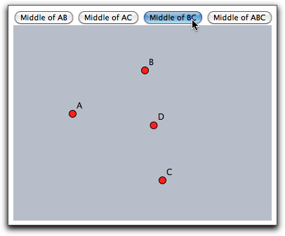

name="CindyJSDemo" というようにHTMLコードのアプレットタグで与えられます。このハンドルを利用して JavaScript は任意の CindyScript 命令文を、関数 doCindyScript(<statement>) で呼び出すことができます。命令文は文字列として与えられます。この文字列は doCindyScript 関数が呼ばれるたびに解析されて実行されます。次のコードがその例です。４つの点A,B,C,Dに対し、HTMLの４つのボタンによって、それぞれ関係する位置に配置します。
⟨script language="JavaScript" type="text/javascript"⟩
function doScript(c) { document.CindyJSDemo.doCindyScript(c);};
⟨/script⟩
⟨input type="button" value="Middle of AB"
onclick="doScript('D.xy=(A+B)/2');" /⟩
⟨input type="button" value="Middle of AC"
onclick="doScript('D.xy=(A+C)/2');" /⟩
⟨input type="button" value="Middle of BC"
onclick="doScript('D.xy=(B+C)/2');" /⟩
⟨input type="button" value="Middle of ABC"
onclick="doScript('D.xy=(A+B+C)/3');" /⟩
⟨br⟩
⟨applet name="CindyJSDemo"
code = "de.cinderella.CindyApplet"
archive = "cindyrun2.jar"
width = 680
height = 336⟩
... applet specifications ...
⟨/applet⟩
 |
repaint 命令を使ってある位置から別の位置へ円滑な移動をさせる弧とができます。残念ながら、JavaScript では、文字列に普通の 改行 を含むことはできません。ですから、複雑なスクリプトが断片化される場合があります。より小さなスクリプトに分割することによってこの問題が回避できます。次のコードは点A,B,Cを、位置 [0,0], [4,0] and [2,3] へ動かすボタンの例です。⟨input type="button" value="Smooth move of ABC" onclick="doScript( 'oldpos=[A.xy,B.xy,C.xy];'+ 'newpos=[[0,0],[4,0],[2,3]];'+ 'n=40;'+ 'repeat(n,i,'+ ' l=i/n;'+ ' pos=l*newpos+(1-l)*oldpos;'+ ' A.xy=pos_1;'+ ' B.xy=pos_2;'+ ' C.xy=pos_3;'+ ' repaint();'+ ' wait(10);'+ ');' );" /⟩
javascript(<string>)javascript(...) を使うだけです。次のコードは、点Aが原点から離れると JavaScript で「A is too close to the origin」警告を出すものです。
if(|A,[0,0]|<1,
javascript("alert('A is too close to the origin')");
);
Page last modified on Monday 27 of February, 2012 [11:09:32 UTC].
The original document is available at
http://doc.cinderella.de/tiki-index.php?page=JavascriptJ